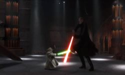
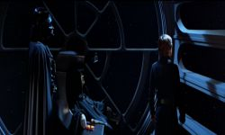

Star Wars / Films
This is where it begins (and for some people ends) for every Star Wars fan. Without these films there would be no Star Wars. These are my favourite films without a doubt and this is what I think of them.
(Some, if not all, pictures courtesy of Galactic Empire UK)
(All pictures © Lucasfilm LTD)
Star Wars : Episode I : The Phantom Menace
What it's about:
The beginning of the saga. Young Anakin Skywalker is rescued from slavery by Jedi Master Qui-Gon Jinn. He returns with the Jedi and Padmé to rescue her home planet from an illegal blockade. When Qui-Gon dies Anakin is trained by Obi-Wan Kenobi.
What do I think:
For many people Episode I was a disappointment. However I fail to see their point of view. I thought Episode I was a great story and not just for children. Jar-Jar to me was not just a walking stuffed toy. He was a great character with great feelings. I especially loved the political intrigue and am looking forward to more in Episode II.
Favourite scene:
The final battle (Duel of the Fates).

Star Wars : Episode II : Attack of the Clones
What it's about:
A love story between Anakin and Padm� is set against the backdrop of the biggest (and most infamous) battle in Star Wars history, The Clone Wars. While Obi-Wan Kenobi tries to solve the mystery surrounding Kamino and Geonosis, Anakin continually slips toward the dark side especially after losing his mother.
What do I think:
Episode II was a brilliant film. I honestly couldn't believe how much I enjoyed watching it. So far I've seen it five times (but I don't plan to see it again before the video). Not only that but there were great performances by all and the CGI Yoda is amazing.
Favourite Scene:
It has to be the final battle between everyone's favourite Muppet, Yoda, and Count Dooku

Star Wars : Episode III : Revenge of the Sith
What it's about:
Said by George Lucas and other people in the know to be the darkest of all the Star Wars films.
What do I think:
Revenge of the Sith is shaping up to be a great Star Wars film. Lots of action and a realy long Obi-Wan/Anakin duel. Can't wait and there's less than 300 days to go.
Favourite Scene:
Looking forward to seeing the clone wars and the Anakin/Obi-Wan duel.

I know it's a Hyperspace image but it's just so cool. Sorry George.
Buy Hyperspace you hippies!!!
Star Wars : Episode IV : A New Hope
What it's about:
The film that started it all off in 1977. Princess Leia has been captured by Sith Lord, Darth Vader. Obi-Wan Kenobi and Luke Skywalker team up with Han Solo to rescue her and to destroy the Death Star before the rebels are crushed.
What do I think:
From the moment that the Star Destroyer opens fire on the Tantive IV, to the final destruction of the Death Star, it's a roller-coaster ride that never lets you rest. Although I never saw the film in 1977 (I wasn't even born) I still greatly appreciate the quality of the film and the special effects of the original.
Favourite Scene:
At the moment it's the scene in Obi-Wan's hut. Makes me think about the prequels.

Star Wars : Episode V : The Empire Strikes Back
What it's about:
On the run from Imperial pursuers, the rebels leave their base on Hoth. Luke Skywalker leaves to find Jedi Master Yoda on Dagobah. Han Solo and Princess Leia hope to find refuge on Bespin. However they are soon captured by Darth Vader and Han is transported to Tatooine by Boba Fett. Luke comes to rescue them but ends up being rescued himself.
What do I think:
If you have to make a sequel then make it better than the original and boy did they do that! Better effects, faster action and a killer duel between Darth Vader and Luke. Jedi Master Yoda also makes the film for me. Having him act funny and slightly annoying before we find out who he really is, that is pure genius.
Favourite Scene:
Has to be the Lightsaber duel between Vader and Luke leading up to... "I am your father!"

Star Wars : Episode VI : Return of the Jedi
What it's about:
After freeing Han Solo from Jabba the Hutt, Luke Skywalker takes part in an attack which will finally destroy the Empire. While Luke confronts the Emperor and Darth Vader, Princess Leia and Han attempt to knock out the Death Star's shield so that the rebels can destroy it. Finally Luke turns Darth Vader from the Dark Side and sees him kill the Emperor.
What do I think:
Many people think that Episode VI is the weak link in the trilogy. However I beg to differ. It has one of the most exciting space battles of the trilogy. It has the most lively lightsaber duel. The Ewoks may be a bit cute but they're definitely not soft. And it shows us the Emperor in his full glory for the first time. What more could you ask for?
Favourite Scene:
The Emperor's throne room scene with Luke.

Versions that I have of the films:
Episode I:
Original release VHS 1999. Pan & Scan.
Episode II:
Original release VHS 2002. Pan & Scan. "Star Wars Connections" featurette, Six Deleted Scenes.
Episode III:
N/A.
Episode IV:
Original release VHS 1995. THX mastered, Pan & Scan. Special George Lucas interview, Part I.
Special Edition release VHS 1997. Pan & Scan. Making of: "Star Wars Special Edition".
Episode V:
Original release VHS 1995. THX mastered, Pan & Scan. Special George Lucas interview, Part II.
Special Edition release VHS 1997. Pan & Scan. Making of: "The Empire Strikes Back Special Edition".
Episode VI:
Original release VHS 1995. THX mastered, Pan & Scan. Special George Lucas interview, Part III.
Special Edition release VHS 1997. Pan & Scan. Making of: "Return of the Jedi Special Edition".
This site, PaddyFedoo Online, is © of Patrick O' Hara.
Do not use any images or sounds without permission.
Any other images and sounds are © of their respective owners.
If you do own anything and want it removed, please e-mail me
|